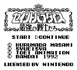

Saint Seiya - Gameboy Games
Saint Paradise Saikyou no Senshitachi

Company:
Bandai
Date Released:
1992
Genre:
RPG
Gameplay tutorial
available at
Saint Seiya Game Guides Web Page
.
Anime Video Game Resource Center © 1998 by
Luis A. Cruz